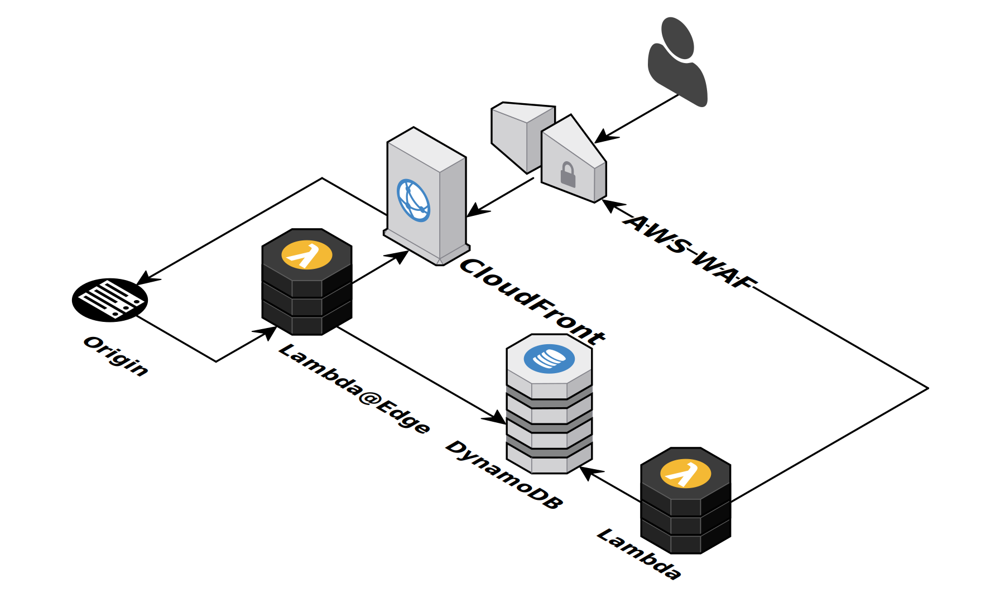

AWS WAF with Lambda@Edge
Rennes AWS User Group
Who Am I ?
- Adrien Bréfort
- Public Cloud Lead DevOps at Claranet
- Working with AWS everyday
AWS WAF
What is it ?
- Basic WAF
- Small set of predefined rules
- Limited rate-limiting
- Can be used with CloudFront or an ALB
Lambda@Edge
What is it ?
- Like Lambda
- Executed at edge locations
- With specific limits
- Network calls are now possible for origin events
Use case
Issues
- Monitoring triggered randomly by light attacks
- Existing WAF rule updated by hand
- Lot of false alarms and manual labor
Possible solutions
- AWS WAF rate limiting : threshold too high
- Cloudfront log analysis : log shipping too slow
- Application log analysis : non-trivial in this case
- Distributed fail2ban with redis and Nginx/Lua : autoscaling issues
Solution
- Lambda@Edge : Analyze origin responses
- DynamoDB : Count occurences
- Lambda : Block bad IPs
Demo
Conclusion
It works !Pricing could be an issue for high traffic websites.
Questions ?